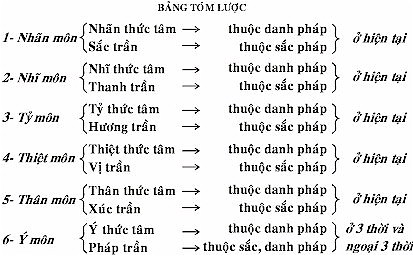
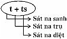
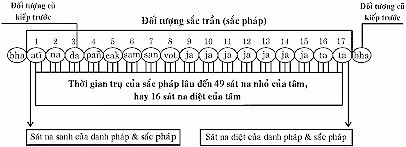

|
Tìm hiểu PHÁP HÀNH THIỀN TUỆ - Tỳ khưu HỘ PHÁP
PHẦN II PHÁP HÀNH (BHĀVANĀ) 2- PHÁP HÀNH THIỀN TUỆ (Vipassanābhāvanā) Pháp hành thiền tuệ là pháp hành chỉ có trong Phật giáo, không có ngoài Phật giáo. Qua tiểu sử của Đức Phật khi còn là Đức Bồ Tát, Ngài đã từng thọ giáo với vị Đạo sư Ālāra Kālāmagotta và vị Đạo sư Udaka Rāmaputta về pháp hành thiền định, Đức Bồ Tát đã chứng đắc tứ thiền sắc giới và tứ thiền vô sắc giới, là pháp hành cao nhất ở thời kỳ ấy, nhưng hoàn toàn không có pháp hành thiền tuệ. Pháp hành thiền tuệ là pháp hành dẫn đến sự chứng ngộ chân lý Tứ thánh đế, chứng đắc 4 Thánh Đạo, 4 Thánh Quả và Niết Bàn, diệt đoạn tuyệt được tham ái là nhân sanh khổ, và tất cả mọi phiền não, mọi ác pháp, cuối cùng tịch diệt Niết Bàn, chấm dứt khổ tử sanh luân hồi trong ba giới bốn loài. Vì vậy, pháp hành thiền tuệ là pháp hành rất vi tế, sâu sắc, rất khó hiểu về phần pháp học (lý thuyết), lại càng khó về pháp hành (thực hành) cho đúng. Phần pháp học khó hiểu, là vì những danh từ ngôn ngữ chế định có Thực tánh pháp làm nền tảng. Song thực tánh của tất cả danh pháp, sắc pháp hoàn toàn không phải là danh từ ngôn ngữ chế định (paññatti). Do đó, pháp học cũng chỉ là phương tiện để hiểu rõ, phân biệt rõ được danh từ chế định thực tánh của mỗi danh pháp, sắc pháp để hiểu biết về pháp hành thiền tuệ. Phần pháp hành thiền tuệ lại càng rất khó, là vì đối tượng của pháp hành thiền tuệ là danh pháp, sắc pháp thuộc Chân nghĩa pháp (Paramatthadhamma), hay Thực tánh pháp (Sabhāvadhamma), hoàn toàn không phải danh từ ngôn ngữ chế định. Cho nên rất khó thấy rõ, rất khó biết rõ, bởi vì vô minh (avijjā) bao trùm phủ kín lên thực tánh của danh pháp, sắc pháp, lại còn bị tham ái (taṇhā) lôi cuốn theo 6 dục cảnh: sắc đẹp, tiếng hay, mùi thơm, vị ngon, xúc êm ái, pháp trần hài lòng, nên mắc phải những sai lầm hư ảo (vipallāsa) như sau: * Tâm hư ảo (cittavipallāsa): Tâm biết sai lầm nơi danh pháp, sắc pháp. * Tà kiến hư ảo (diṭṭhivipallāsa): Tà kiến thấy lầm nơi danh pháp, sắc pháp. * Tưởng hư ảo (saññāvipallāsa): Tưởng sai lầm nơi danh pháp, sắc pháp. - Tâm biết lầm, tà kiến thấy lầm, tưởng sai lầm nơi danh pháp, sắc pháp cho là "thường" (nicca); nhưng sự thật danh pháp, sắc pháp có "trạng thái vô thường" (anicca). - Tâm biết lầm, tà kiến thấy lầm, tưởng sai lầm nơi danh pháp, sắc pháp cho là "lạc" (sukha); nhưng sự thật danh pháp, sắc pháp có "trạng thái khổ" (dukkha). - Tâm biết lầm, tà kiến thấy lầm, tưởng sai lầm nơi danh pháp, sắc pháp cho là "ngã" (attā); nhưng sự thật danh pháp, sắc pháp có "trạng thái vô ngã" (anattā). - Tâm biết lầm, tà kiến thấy lầm, tưởng lầm nơi danh pháp, sắc pháp cho là "tịnh, đẹp" (subha); nhưng sự thật danh pháp, sắc pháp có trạng thái "bất tịnh" (asubha). Do tâm biết lầm, tà kiến thấy lầm, tưởng sai lầm nơi danh pháp cho rằng thường, lạc, ngã, tịnh nên làm cho chúng sinh say mê trong danh pháp, sắc pháp, ngũ uẩn; mà không biết rằng danh pháp, sắc pháp, ngũ uẩn là vô thường, khổ, vô ngã, bất tịnh. Pháp hành thiền tuệ là pháp hành để phát sanh trí tuệ thiền tuệ thấy rõ, biết rõ đúng theo sự thật thực tánh của danh pháp, sắc pháp sanh rồi diệt liên tục không ngừng, nên hiện rõ trạng thái vô thường, trạng thái khổ, trạng thái vô ngã, trạng thái bất tịnh, để diệt được những điều hư ảo sai lầm cho là "danh pháp, sắc pháp là thường, lạc, ngã, tịnh", làm cho chúng sinh say mê trong danh pháp, sắc pháp, ngũ uẩn. Pháp hành thiền tuệ hoàn toàn không sáng tạo thêm ra những gì mới mẽ, không làm cho phát sanh những ấn chứng, hỉ lạc như pháp hành thiền định. Sự thật, pháp hành thiền tuệ cốt để phát sanh trí tuệ thiền tuệ thấy rõ, biết rõ trạng thái vô thường, trạng thái khổ, trạng thái vô ngã của danh pháp, sắc pháp là sự thật hiển nhiên. Sở dĩ không thấy rõ, không biết rõ được thực tánh của các pháp, là vì vô minh che phủ sự thật thực tánh pháp ấy. Cho nên, tiến hành thiền tuệ để phát sanh trí tuệ thiền tuệ diệt tâm vô minh, trở lại thấy rõ, biết rõ sự thật thực tánh pháp, chỉ có khổ mà thôi, để nhàm chán nơi danh pháp, sắc pháp; để diệt tâm tham ái nơi danh pháp, sắc pháp; để giải thoát khỏi danh pháp, sắc pháp, đó là giải thoát khổ sanh chính là giải thoát mọi cảnh khổ. Định Nghĩa Thiền Tuệ (Vipassanāñāṇa). Thiền tuệ là trí tuệ thấy rõ và biết rõ danh pháp, sắc pháp sanh rồi diệt, nên hiện thấy rõ biết rõ ba trạng thái chung: trạng thái vô thường, trạng thái khổ, trạng thái vô ngã, dẫn đến sự chứng ngộ chân lý Tứ thánh đế, chứng đắc 4 Thánh Đạo, 4 Thánh Quả và Niết Bàn, diệt đoạn tuyệt được mọi tham ái cùng mọi phiền não và mọi ác pháp, giải thoát mọi cảnh khổ tử sanh luân hồi trong ba giới bốn loài Những điểm đặc biệt trong phần định nghĩa 1- Trí tuệ thiền tuệ (vipassanāñāṇa): là chủ thể của pháp hành thiền tuệ. 2- Danh pháp (nāmadhamma), sắc pháp (rūpadhamma): là đối tượng của pháp hành thiền tuệ. 3- Sự sanh (upāda), sự diệt (vāya) của danh pháp, sắc pháp trong hiện tại, đó là sự thấy rõ, biết rõ của trí tuệ thiền tuệ. 4- Ba trạng thái chung (sāmaññalakkhaṇa) của danh pháp, sắc pháp: đó là sự thấy rõ, biết rõ của trí tuệ thiền tuệ. 5- Tứ thánh đế (Ariyasacca): là mục đích của trí tuệ thiền tuệ. 6- 4 Thánh Đạo (Ariyamagga): là 4 siêu tam giới thiện tâm, là kết quả của pháp hành thiền tuệ. 7- 4 Thánh Quả (Ariyaphala): là 4 siêu tam giới quả tâm, là quả của 4 siêu tam giới thiện tâm. 8- Niết Bàn (Nibbāna): là đối tượng của 4 Thánh Đạo Tâm và 4 Thánh Quả Tâm. 9- Diệt đoạn tuyệt (samucchedapahāna) được tham ái, phiền não, ác pháp: bằng Thánh Đạo Tuệ. 10- Quả báu của pháp hành thiền tuệ. PHẦN GIẢI THÍCH 1- Trí Tuệ Thiền Tuệ Trí tuệ thiền tuệ (Vipassanāñāṇa) là chủ thể chính yếu của pháp hành thiền tuệ, có khả năng đặc biệt, thấy rõ, biết rõ danh pháp, sắc pháp sanh rồi diệt, nên hiện rõ 3 trạng thái chung: trạng thái vô thường, trạng thái khổ, trạng thái vô ngã, dẫn đến sự chứng ngộ chân lý Tứ thánh đế, chứng đắc 4 Thánh Đạo, 4 Thánh Quả và Niết Bàn. Còn lại các loại trí tuệ khác hiểu biết các pháp chế định (paññattidhamma), pháp học, pháp hành thiền định, các ấn chứng của thiền định…, những loại trí tuệ ấy không gọi là trí tuệ thiền tuệ. Chức năng của trí tuệ nói chung: Trí tuệ thuộc về tâm sở gọi là tuệ chủ tâm sở (paññindriya-cetasika), đồng sanh với 47 hay 79 tâm như sau:
Tuệ chủ tâm sở hợp trong mỗi tâm có khả năng biết đối tượng riêng biệt như sau: - Tuệ chủ tâm sở đồng sanh trong 12 dục giới tịnh hảo tâm hợp với trí, đó là: 4 dục giới đại thiện tâm hợp với trí + 4 dục giới đại quả tâm hợp với trí + 4 dục giới đại duy tác tâm hợp với trí, có khả năng biết 6 đối tượng: sắc trần, thanh trần, hương trần, vị trần, xúc trần, pháp trần [5] , biết đối tượng Chân nghĩa pháp và đối tượng Chế định pháp. - Tuệ chủ tâm sở đồng sanh với 15 sắc giới tâm, đó là: 5 sắc giới thiện tâm + 5 sắc giới quả tâm + 5 sắc giới duy tác tâm, có khả năng chỉ biết được 1 đối tượng là pháp trần, phần thuộc về Chế định pháp (Paññattidhamma). - Tuệ chủ tâm sở đồng sanh với 12 vô sắc giới tâm, đó là: 4 vô sắc giới thiện tâm + 4 vô sắc giới quả tâm + 4 vô sắc giới duy tác tâm, có khả năng chỉ biết được 1 đối tượng là pháp trần, phần thuộc về Chế định pháp và Chân nghĩa pháp là đối tượng của thiền định. - Tuệ chủ tâm sở đồng sanh với 8 hay 40 siêu tam giới tâm, đó là: 4 hay 20 Thánh Đạo Tâm + 4 hay 20 Thánh Quả Tâm, có khả năng chỉ biết được 1 đối tượng là pháp trần, phần thuộc về Niết Bàn, Chân nghĩa pháp. Trí tuệ thiền tuệ phát sanh như thế nào? Trí tuệ thiền tuệ phát sanh do nhiều nguyên nhân xa và gần. - Nguyên nhân xa: hành giả phải là người tam nhân (vô tham, vô sân, vô si) từ khi tái sanh. - Nguyên nhân gần: do trí tuệ lắng nghe, học hỏi, nghiên cứu hiểu biết rõ ràng về danh pháp, sắc pháp thuộc Chân nghĩa pháp; và do trí tuệ tư duy đúng đắn theo pháp đã học, làm nền tảng căn bản, để tiến hành đúng theo pháp hành thiền tuệ. Khi hành giả tiến hành thiền tuệ, có chánh niệm trực nhận, trí tuệ tỉnh giác trực giác danh pháp, sắc pháp, có sự tinh tấn phát sanh trí tuệ thiền tuệ thấy rõ, biết rõ sự sanh, sự diệt của danh pháp, sắc pháp, nên hiện rõ trạng thái vô thường, trạng thái khổ, trạng thái vô ngã, dẫn đến sự chứng ngộ chân lý Tứ thánh đế, chứng đắc 4 Thánh Đạo, 4 Thánh Quả và Niết Bàn. Trí tuệ thiền tuệ (Vipassanāñāna), có hai loại: - Trí tuệ thiền tuệ thuộc tam giới (lokiyavipassanāñāṇa). - Trí tuệ thiền tuệ thuộc siêu tam giới (lokuttaravipassanā). * Trí tuệ thiền tuệ thuộc tam giới: là tuệ chủ tâm sở đồng sanh trong 4 dục giới đại thiện tâm hợp với trí, (trong tâm của hạng thiện trí phàm nhân và 3 bậc Thánh Hữu Học: bậc Thánh Nhập Lưu, Thánh Nhất Lai, Thánh Bất Lai), và 4 dục giới đại duy tác tâm hợp với trí, (trong tâm của bậc Thánh Arahán), có 6 đối tượng: sắc trần, thanh trần, hương trần, vị trần, xúc trần và pháp trần, thuộc danh pháp sắc pháp trong tam giới; hay nói cách khác: Trí tuệ thiền tuệ thấy rõ, biết rõ danh pháp, sắc pháp thuộc tam giới, sanh rồi diệt, nên hiện rõ 3 trạng thái chung: trạng thái vô thường, trạng thái khổ, trạng thái vô ngã. Do đó, gọi là: "Trí tuệ thiền tuệ thuộc tam giới". * Trí tuệ thiền tuệ thuộc siêu tam giới: là tuệ chủ tâm sở đồng sanh trong 8 hay 40 siêu tam giới tâm, hoặc 4 hay 20 Thánh Đạo Tâm và 4 hay 20 Thánh Quả Tâm, chỉ có Niết Bàn siêu tam giới làm đối tượng. Do đó, gọi là: "Trí tuệ thiền tuệ thuộc siêu tam giới". Trí tuệ thiền tuệ thuộc siêu tam giới này, có tên gọi là: 4 Thánh Đạo Tuệ và 4 Thánh Quả Tuệ. 2- Danh pháp, Sắc pháp Đối tượng của thiền tuệ phải là danh pháp (nāmadhamma) và sắc pháp (rūpadhamma) thuộc về Chân nghĩa pháp (Paramattha-dhamma), không phải là Chế định pháp (Paññattidhamma). 2.1- Danh Pháp Danh pháp (nāmadhamma) là pháp có trạng thái hướng biết đối tượng (nāmanalakkhaṇa). Danh pháp đó là: tâm và tâm sở.
* Tâm (citta): là đối tượng của thiền tuệ, chỉ có 81 tâm thuộc tam giới, trừ 8 hay 40 siêu tam giới tâm, vì siêu tam giới tâm không thuộc về Khổ thánh đế. Tam giới tâm có 81 tâm là: 1- Dục giới tâm có 54 tâm, gồm:
2- Sắc giới tâm có 15 tâm, gồm:
3- Vô sắc giới tâm có 12 tâm, gồm:
81 tam giới tâm này, thuộc Khổ thánh đế là pháp nên biết. * Tâm Sở (cetasita), có 52 tâm. Tâm sở luôn luôn tùy thuộc vào tâm, với 4 trạng thái:
Số lượng tâm sở đồng sanh với mỗi tâm, ít hay nhiều khác nhau tùy theo mỗi tâm, để trợ giúp tâm làm các phận sự. Ví dụ: - 2 nhãn thức tâm, chỉ cần có 7 tâm sở đồng sanh, làm các phận sự trợ giúp cho nhãn thức tâm làm một phận sự nhìn thấy sắc trần. Cũng như vậy, 2 nhĩ thức tâm, 2 tỷ thưc tâm, 2 thiệt thức tâm, 2 thân thức tâm, chỉ cần có 7 tâm sở đồng sanh trợ giúp làm phận sự của mỗi tâm ấy. Đó là 10 tâm có số lượng tâm sở ít nhất. Riêng dục giới đại thiện tâm cần có đến 38 tâm sở đồng sanh. Vì tâm này làm nhiều phận sự, nên cần có số lượng tâm sở đồng sanh nhiều nhất. Trạng Thái Tâm, Tâm Sở Tâm và tâm sở có 2 trạng thái: trạng thái riêng và trạng thái chung. - Trạng thái riêng của tâm, tâm sở.
- Trạng thái chung của tâm, tâm sở. Tâm và tâm sở thuộc về danh pháp cùng có 3 trạng thái chung:
Phận Sự Của Danh Pháp Danh pháp có 2 phận sự chính: 1- Danh pháp làm phận sự chủ thể nhận biết đối tượng.
2- Danh pháp làm phận sự đối tượng của thiền tuệ. Hành giả tiến hành thiền tuệ có chánh niệm, trí tuệ tỉnh giác thấy rõ, biết rõ danh pháp làm đối tượng. Danh pháp làm đối tượng của thiền tuệ gồm có 81 tâm thuộc tam giới và 52 tâm sở. Trong trường hợp hành giả tiến hành thiền tuệ có chánh niệm, trí tuệ tỉnh giác thấy rõ, biết rõ thọ hay tâm làm đối tượng của thiền tuệ, gọi là: "danh pháp biết danh pháp". Nghĩa là, chánh niệm, trí tuệ tỉnh giác thuộc về danh pháp chủ thể phát sanh sau, thấy rõ, biết rõ thọ hay tâm thuộc về danh pháp đối tượng trước vừa mới diệt. Như phần niệm thọ, niệm tâm trong pháp hành Tứ niệm xứ. 2.2- Sắc Pháp Sắc pháp (rūpadhamma) là pháp có trạng thái bị hủy hoại do nóng, lạnh, đói, khát,… (ruppanalakkhaṇa). Sắc pháp gồm có 28 sắc pháp, trong thân thể của mỗi người bình thường không bị bệnh tật khiếm khuyết, có thể có đủ 27 sắc pháp.
Phận Sự Của Sắc Pháp Sắc pháp chỉ có một phận sự duy nhất là làm đối tượng của tâm, hay làm đối tượng của danh pháp. Sắc pháp hoàn toàn không thể biết được đối tượng, không biết cảm giác. Riêng phần sắc thân của con người không biết cảm giác nóng, lạnh, đói, khát, đau nhức…. Sở dĩ, sắc thân biết cảm giác nóng, lạnh, đói, khát, đau nhức,… là do tâm và tâm sở tức là danh pháp. Nếu không có tâm và tâm sở hay danh pháp nương nhờ nơi sắc thân này nữa, thì sắc thân này trở thành tử thi, không thể thở vô, thở ra, đi, đứng, nằm, ngồi,… nói năng, ăn uống; cũng không biết cảm giác nóng lạnh, đói khát, đau nhức…. Sắc thân này thở vô, thở ra, đi, đứng, ngồi, nằm, nói năng,… đều do tâm chủ động, gọi là sắc pháp phát sanh từ tâm (cittajarūpa). Sắc pháp trong thân chỉ có thể tiếp xúc với đối tượng, làm nhân duyên để phát sanh tâm hay danh pháp mà thôi. Ví dụ: - Mắt (nhãn tịnh sắc: cakkhupasādarūpa) không thể nhìn thấy sắc trần, chỉ là nơi tiếp xúc với sắc trần, do sự tiếp xúc ấy, nên phát sanh nhãn thức tâm. Chính nhãn thức tâm mới có thể nhìn thấy sắc trần. Cũng như vậy, nhĩ tịnh sắc, tỷ tịnh sắc, thiệt tịnh sắc, thân tịnh sắc, sắc ý căn (hadayavatthurūpa) chỉ là nơi tiếp xúc với đối tượng riêng biệt từng mỗi môn mà thôi. Phân Biệt Danh Pháp, Sắc Pháp Trong 6 Môn Danh pháp, sắc pháp phát sanh do nương nhờ 6 môn như sau: 1- Nhãn môn (mắt): Khi sắc trần, hình dạng, tiếp xúc với nhãn tịnh sắc (mắt), do sự tiếp xúc ấy, nên phát sanh nhãn thức tâm làm phận sự nhìn thấy được sắc trần: hình dạng… trong hiện tại. Nhãn thức tâm có 2 tâm:
2- Nhĩ môn (tai): Khi thanh trần, các âm thanh, tiếp xúc với nhĩ tịnh sắc (tai), do sự tiếp xúc ấy, nên phát sanh nhĩ thức tâm làm phận sự nghe thanh trần, các âm thanh, trong hiện tại. Nhĩ thức tâm có 2 tâm:
3- Tỷ môn (mũi): Khi hương trần, các loại mùi tiếp xúc với tỷ tịnh sắc (mũi), do sự tiếp xúc ấy, nên phát sanh tỷ thức tâm làm phận sự ngửi hương trần, các loại mùi, trong hiện tại. Tỷ thức tâm có 2 tâm:
4- Thiệt môn (lưỡi): Khi vị trần, các loại vị, tiếp xúc với thiệt tịnh sắc (lưỡi), do sự tiếp xúc ấy, nên phát sanh thiệt thức tâm làm phận sự nếm vị trần, các loại vị, trong hiện tại. Thiệt thức tâm có 2 tâm:
5- Thân môn (thân): Khi xúc trần, cứng, mềm, nóng, lạnh, phồng, xẹp…, tiếp xúc với thân tịnh sắc (thân), do sự tiếp xúc ấy, nên phát sanh thân thức tâm làm phận sự tiếp xúc với xúc trần, cứng, mềm, nóng, lạnh…, trong hiện tại. Thân thức tâm có 2 tâm:
6- Ý môn (ý): Khi pháp trần tiếp xúc với sắc ý căn (hadayavatthu-rūpa), do sự tiếp xúc ấy nên phát sanh ý thức tâm làm phận sự biết pháp trần ở 3 thời: quá khứ, hiện tại, vị lai và ngoại 3 thời [7] , đó là đối tượng Niết Bàn và đối tượng paññatti: chế định pháp. Ý thức tâm phát sanh do nương nhờ ý môn, gồm có 75 tâm (trừ 10 thức tâm và 4 vô sắc giới quả tâm).

Danh pháp, Sắc pháp trong Tứ niệm xứ Pháp hành Tứ niệm xứ, Đức Phật thuyết giảng trong kinh "Đại Tứ niệm xứ" có 4 phần như sau:
Nhân Duyên Phát Sanh Danh Pháp, Sắc Pháp Mỗi danh pháp, mỗi sắc pháp phát sanh lên do hội đủ nhân duyên, nếu thiếu nhân duyên nào, danh pháp, sắc pháp không thể phát sanh lên được. Nhân Duyên Phát Sanh Danh Pháp Sự phát sanh danh pháp đối với chúng sinh trong tam giới, có sự nương nhờ khác nhau như sau: * Đối với chúng sinh có ngũ uẩn trong 11 cõi dục giới, danh pháp: tâm, tâm sở phát sanh do nường nhờ 3 pháp.
* Đối với chúng sinh Phạm thiên có ngũ uẩn trong 15 cõi trời sắc giới (trừ cõi Vô tưởng thiên), danh pháp: tâm, tâm sở phát sanh do nương nhờ 3 pháp.
* Đối với chúng sinh Phạm thiên có tứ uẩn trong 4 cõi trời vô sắc giới, danh pháp: tâm, tâm sở phát sanh do nương nhờ 2 pháp.
Danh pháp phát sanh do nương nhờ sắc pháp Danh pháp: Đó là tâm + tâm sở phát sanh do nương nhờ sắc pháp. Ví dụ: Nhãn thức tâm được phát sanh do nhờ sắc trần: hình dạng, tiếp xúc với nhãn tịnh sắc. Ví như: "tiếng chuông" được phát ra thành tiếng là do nhờ dùi chuông đánh đụng vào cái chuông. Thật ra, trong dùi chuông không có tiếng chuông, và trong cái chuông cũng không có tiếng chuông. Sở dĩ có tiếng chuông là vì dùi chuông đụng vào cái chuông. Cũng như vậy, khi sắc trần tiếp xúc với nhãn tịnh sắc, do nhân duyên tiếp xúc ấy, mới phát sanh "nhãn thức tâm", là tâm phát sanh do nương nhờ nhãn tịnh sắc, làm phận sự nhìn thấy sắc trần, hình dạng. Nếu chỉ riêng nhãn tịnh sắc (mắt) thì không thể nhìn thấy được, như khi tâm đăm chiêu suy nghĩ về một vấn đề gì thuộc nội tâm, dầu đôi mắt đang mở vẫn không nhìn thấy những vật đằng trước mặt; hoặc chỉ riêng tâm cũng không thể nhìn thấy được sắc trần, hình dạng, như khi nhắm mắt, bịt mắt, dầu tâm muốn nhìn thấy một vật gì cũng không thể thấy được. Vì cả 2 trường hợp này không hội đủ nhân duyên để cho nhãn thức tâm phát sanh, nên không thể nhìn thấy. Vậy, khi sắc trần: hình dạng tiếp xúc với nhãn tịnh sắc (mắt), do nhân duyên tiếp xúc ấy, mới phát sanh nhãn thức tâm là tâm phát sanh do nương nhờ ở nhãn tịnh sắc. Chính nhãn thức tâm này làm phận sự nhìn thấy sắc trần. Ngoài nhãn thức tâm ra, không có một tâm nào khác, hay một người nào khác, một chúng sinh nào khác có thể nhìn thấy sắc trần, hình dạng trong hiện tại. Tương tự như vậy, nhĩ thức tâm được phát sanh do nhờ thanh trần, âm thanh, tiếp xúc với nhĩ tịnh sắc (tai). Nếu chỉ riêng nhĩ tịnh sắc (tai), không thể nghe được thanh trần, âm thanh, như khi ngủ say, tai không nghe được âm thanh nào; hoặc chỉ riêng tâm cũng không thể nghe được âm thanh nào, như khi tai bị bịt chặt, hay trong phòng kín, dẫu tâm muốn nghe âm thanh, cũng không thể nghe được. Vì cả hai trường hợp này, không hội đủ nhân duyên, để cho nhĩ thức tâm phát sanh, nên không thể nghe được. Vậy, khi thanh trần, âm thanh tiếng nói tiếp xúc với nhĩ tịnh sắc (tai), do nhân duyên tiếp xúc ấy, mới phát sanh nhĩ thức tâm là tâm phát sanh do nương nhờ ở nhĩ tịnh sắc. Chính nhĩ thức tâm này làm phận sự nghe thanh trần, âm thanh. Ngoài nhĩ thức tâm ra, không còn có tâm nào khác, hay một người nào khác, một chúng sinh nào khác có thể nghe được thanh trần, âm thanh trong hiện tại. Tương tự như vậy, tỷ thức tâm, thiệt thức tâm, thân thức tâm, ý thức tâm. Mỗi tâm phát sanh cũng đều do hội đủ nhân duyên riêng của tâm ấy. Nhân Duyên Phát Sanh Sắc Pháp Sắc pháp phát sanh do 4 nhân duyên.
* Sắc pháp phát sanh do tâm hay danh pháp. Hành giả tiến hành thiền tuệ nên tìm hiểu về sắc pháp phát sanh do tâm (cittajarūpa), vì liên quan đến đối tượng trí tuệ thứ nhì trong 16 loại trí tuệ thiền tuệ. Ví dụ: 4 oai nghi chính: đi, đứng, ngồi, nằm, và các oai nghi phụ: bước tới, bước lui, quay bên trái, quay bên phải, co tay, co chân, duỗi tay, duỗi chân… đều là những sắc pháp phát sanh do tâm, làm đối tượng thiền tuệ. - Nhân duyên phát sanh 4 oai nghi. 4 oai nghi đi, đứng, ngồi, nằm là sắc pháp phát sanh do tâm. Ví dụ: "Oai nghi đi" gọi là "thân đi" hoặc "sắc đi" là sắc pháp phát sanh do bởi nhiều nhân duyên tuần tự như sau:
Tương tự như vậy, sắc đứng, sắc ngồi, sắc nằm, và sắc bước tới, sắc bước lui, sắc quay bên phải, sắc quay bên trái, sắc co tay vào, sắc co chân vào, sắc duỗi tay ra, sắc duỗi chân ra,… đều là những sắc pháp phát sanh do tâm (do danh pháp). Như vậy, mỗi oai nghi đi, đứng, ngồi, nằm được là do hội đủ nhân duyên; chứ không phải người nào, hoặc chúng sinh nào có thể đi, đứng, ngồi, nằm. Sở dĩ, người bị bệnh bại liệt, dầu tâm muốn đi, đứng, ngồi, nằm,… như người bình thường không thể được, là vì chất gió phát sanh do tâm quá yếu, không đủ năng lực làm chuyển động thân thể nặng nề do bởi chất đất và chất nước này. Điều quan trọng của danh pháp, sắc pháp Hành giả muốn tiến hành thiền tuệ, điều quan trọng đầu tiên cần phải học cho hiểu biết rõ ràng về danh pháp, sắc pháp, vì danh pháp, sắc pháp là đối tượng của thiền tuệ; là pháp để thực nghiệm sự thật chân lý, để thấy rõ, biết rõ thực tánh của danh pháp, sắc pháp đúng theo Chân nghĩa pháp (Paramatthadhamma), hay Thực tánh pháp (Sabhāvadhamma) có trạng thái riêng của mỗi danh pháp, mỗi sắc pháp; có sự sanh, sự diệt của danh pháp, sắc pháp; có 3 trạng thái chung: trạng thái vô thường, trạng thái khổ, trạng thái vô ngã của danh pháp, sắc pháp, có thể dẫn đến sự chứng ngộ chân lý Tứ thánh đế, chứng đắc 4 Thánh Đạo, 4 Thánh Quả và Niết Bàn. Ngoài danh pháp, sắc pháp thuộc về Chân nghĩa pháp ra, Chế định pháp, dầu danh từ ngôn ngữ chế định ấy có Thực tánh pháp làm nền tảng đi nữa, thì cũng hoàn toàn không có trạng thái riêng, không có sự sanh, sự diệt, không có trạng thái chung, không thể dẫn đến sự chứng ngộ chân lý Tứ thánh đế, chứng đắc 4 Thánh Đạo, 4 Thánh Quả và Niết Bàn. Ví như một người đọc chữ (sách), điều quan trọng là phải có chữ để mà đọc, phải biết từng nguyên âm, phụ âm, cách ráp vần thành chữ; hiểu ý nghĩa của chữ ấy, thì người ấy đọc được chữ, hiểu được nghĩa. Cũng như vậy, hành giả tiến hành thiền tuệ, cần phải học hiểu rõ mỗi danh pháp, mỗi sắc pháp dùng để làm đối tượng thiền tuệ, để thực nghiệm sự thật chân lý của nó. Phiền Não Nương Nhờ Nơi Danh Pháp, Sắc Pháp Tất cả mọi phiền não nhất là tà kiến (diṭṭhi), tham ái (taṇhā), ngã mạn (māna) đều nương nhờ nơi danh pháp, sắc pháp mà phát sanh. 1- Tà kiến nương nhờ nơi danh pháp, sắc pháp Một số người trong đời này, không gần gũi thân cận với bậc Thiện trí trong Phật giáo, không được học hỏi hiểu rõ về danh pháp, sắc pháp; không tiến hành thiền tuệ, nên không thấy rõ, biết rõ danh pháp, sắc pháp đúng theo thực tánh của các pháp là pháp vô ngã. Do đó, tà kiến (diṭṭhi) nương nhờ nơi danh pháp, sắc pháp phát sanh, nên thấy sai, chấp lầm từ danh pháp cho là ta, sắc pháp cho là ta, là ngã như sau:
Sở dĩ tâm tà kiến thấy sai, chấp lầm từ danh pháp, từ sắc pháp cho là "Ta" (Ngã), là vì không có chánh kiến thiền tuệ thấy đúng, biết đúng rằng: "Thực tánh của danh pháp, sắc pháp là Pháp vô ngã, và không có trí tuệ thiền tuệ thấy rõ, biết rõ danh pháp, sắc pháp có trạng thái vô ngã". Sự thật, danh pháp là pháp vô ngã, sắc pháp là pháp vô ngã: không phải ta, không phải người, không phải chúng sinh, không phải vật này, vật kia. Nhưng do tâm tà kiến theo chấp ngã (attānudiṭṭhi) thấy sai, chấp lầm cho là "ta, người, chúng sinh, vật này vật kia…". Như vậy, đúng theo thực tánh của các pháp không có ngã thì làm sao mà diệt ngã được? Thật ra, sự chấp có ngã là do tà kiến thấy sai chấp lầm; mà tâm tà kiến là có thật, khi diệt được tà kiến, thì không còn chấp ngã nữa. 2- Tham ái nương nhờ nơi danh pháp, sắc pháp Tâm tham ái (taṇhā) hài lòng thỏa thích, say mê ở danh pháp, sắc pháp cho là "tốt đẹp, lợi ích, an lạc…". Sở dĩ tâm tham ái nương nhờ ở danh pháp, sắc pháp cho là tốt đẹp, lợi ích, an lạc, là vì không có trí tuệ thiền tuệ thấy rõ, biết rõ rằng:
3- Ngã mạn nương nhờ nơi danh pháp, sắc pháp. Tâm ngã mạn (māna) chấp ta là danh pháp, sắc pháp cho là "ta hơn người, ta bằng người, ta kém người…". Sở dĩ tâm ngã mạn nương nhờ ở danh pháp, sắc pháp chấp ta hơn người, ta bằng người, ta kém người, là vì không có trí tuệ thiền tuệ thấy rõ, biết rõ rằng:
Do đó, sự học hỏi để hiểu biết rõ về tất cả mọi danh pháp, sắc pháp là điều quan trọng đầu tiên của hành giả muốn tiến hành thiền tuệ. Tà kiến thấy sai làm khổ mình, khổ người Tà kiến thấy sai, biết lầm, chấp lầm danh pháp, sắc pháp cho là "ta, người, đàn ông, đàn bà, chúng sinh, vật này, vật kia,…" cùng với tham tâm phát sanh chấp rằng: "của ta, của người",… rồi phát sanh mọi phiền não tham, sân, si,… tự làm khổ mình, làm khổ người không chỉ ở kiếp hiện tại, mà còn nhiều kiếp vị lai nữa. Ví dụ như: Ban đêm, một người đi đường, nhìn thấy lờ mờ sợi dây ngoằn ngoèo giống như con rắn nằm ở giữa đường. Người ấy nhìn sợi dây ấy, thấy sai, tưởng lầm, chấp lầm cho là "con rắn độc" nên phát sanh tâm sợ hãi, tự làm khổ mình, lại còn nói cho người khác cũng sợ hãi nữa. Cũng như vậy, một số người trong đời này, là người si mê, bị vô minh che phủ thực tánh của danh pháp, sắc pháp, có tà kiến thấy sai, biết lầm, chấp lầm danh pháp, sắc pháp cho là "Ta, của Ta, người, của người, chúng sinh, vật này, vật kia,…". Do đó, các phiền não tham, sân, si, ngã mạn,… có thể phát sanh, tự làm khổ mình, làm khổ người, tự làm khổ mình lẫn người, không chỉ trong kiếp hiện tại này, mà còn phải chịu khổ nhiều kiếp vị lai nữa. Chánh kiến thiền tuệ không làm khổ mình, khổ người Có một số người trong đời này, là người thường được gần gũi với bậc Thánh nhân, bậc Thiện trí trong Phật giáo, được lắng nghe chánh pháp của Đức Phật, được học hỏi hiểu biết rõ về danh pháp, sắc pháp, được tiến hành thiền tuệ, có trí tuệ thiền tuệ thấy rõ, biết rõ thực tánh của danh pháp, sắc pháp, có chánh kiến thiền tuệ thấy đúng, biết đúng theo thực tánh của danh pháp, sắc pháp là:
Nhờ chánh kiến thiền tuệ mới diệt được tà kiến theo chấp ngã, đồng thời diệt tất cả mọi tà kiến khác. Bậc Thánh Thanh Văn có chánh kiến thiền tuệ nên không còn làm khổ mình, làm khổ người, không còn làm khổ cả mình lẫn người, ngay kiếp hiện tại lẫn kiếp vị lai. Ví dụ như: Ban đêm, một người đi đường, có người cho biết có sợi dây ngoằn ngoèo nằm giữa đường. Người ấy, tay cầm đèn thắp sáng, nhìn thấy rõ đúng một sợi dây ngoằn ngoèo nằm ở giữa đường. Người ấy biết rõ rằng sợi dây chỉ là sợi dây, nên không phát sanh tâm sợ hãi, không làm khổ mình, lại còn nói cho người khác cũng không sợ hãi nữa. Cũng như vậy, bậc Thánh Thanh Văn trong đời này, là bậc có chánh kiến thiền tuệ thấy đúng, biết đúng theo thực tánh của các pháp là:
Do đó, các phiền não tham, sân, si, ngã mạn,… không phát sanh, không làm khổ mình, không làm khổ người, không làm khổ cả mình lẫn người, không chỉ trong kiếp hiện tại này mà còn nhiều kiếp vị lai nữa. Danh Pháp, Sắc Pháp Làm Đối Tượng Thiền Tuệ Danh pháp, sắc pháp thuộc về Chân nghĩa pháp có ba thời: quá khứ, hiện tại, vị lai.
Danh pháp, sắc pháp ở thời nào là đối tượng của thiền tuệ? - Danh pháp, sắc pháp thuộc quá khứ đã sanh, đã diệt rồi, danh pháp, sắc pháp ấy không thể làm đối tượng của thiền tuệ. Bởi vì, trí tuệ thiền tuệ không thấy rõ, biết rõ sự sanh, sự diệt của danh pháp, sắc pháp trong quá khứ ấy. Và trí tuệ thiền tuệ cũng không thể thấy rõ, biết rõ trạng thái vô thường, trạng thái khổ, trạng thái vô nga của danh pháp, sắc pháp trong quá khứ ấy. Vì vậy, danh pháp, sắc pháp trong quá khứ không trực tiếp làm đối tượng thiền tuệ. - Danh pháp, sắc pháp thuộc vị lai chưa sanh, danh pháp, sắc pháp ấy không thể làm đối tượng của thiền tuệ. Bởi vì, trí tuệ thiền tuệ không thể thấy rõ, biết rõ sự sanh, sự diệt của danh pháp, sắc pháp trong vị lai ấy. Và trí tuệ thiền tuệ cũng không thể thấy rõ, biết rõ trạng thái vô thường, trạng thái khổ, trạng thái vô ngã của danh pháp, sắc pháp trong vị lai ấy. Vì vậy, danh pháp, sắc pháp trong vị lai không trực tiếp làm đối tượng thiền tuệ. - Danh pháp sắc, pháp đang sanh trong hiện tại này, mới có thể làm đối tượng của thiền tuệ. Bởi vì, trí tuệ thiền tuệ có thể thấy rõ, biết rõ sự sanh, sự diệt của danh pháp, sắc pháp ấy. Và trí tuệ thiền tuệ cũng có thể thấy rõ, biết rõ được trạng thái vô thường, trạng thái khổ, trạng thái vô ngã của danh pháp, sắc pháp trong hiện tại ấy. Vì vậy, chỉ có danh pháp, sắc pháp trong hiện tại mới trực tiếp làm đối tượng thiền tuệ. Tuy nhiên, khi trí tuệ thiền tuệ thấy rõ, biết rõ danh pháp, sắc pháp trong hiện tại, có sự sanh sự diệt, có trạng thái vô thường, trạng thái khổ, trạng thái vô ngã; thì trí tuệ thiền tuệ cũng có thể thấu triệt, thông suốt được danh pháp, sắc pháp trong quá khứ cũng đã có trạng thái vô thường, trạng thái khổ, trạng thái vô ngã. Và trí tuệ thiền tuệ cũng có thể thấu triệt, thông suốt được danh pháp, sắc pháp trong vị lai cũng sẽ có trạng thái vô thường, trạng thái khổ, trạng thái vô ngã; cũng như danh pháp, sắc pháp trong hiện tại này. Chỉ có danh pháp, sắc pháp thuộc về Chân nghĩa pháp mới có sự sanh, sự diệt, nên có 3 thời: quá khứ, hiện tại, vị lai mà thôi. Niết Bàn và Chế định pháp (Paññattidhamma) thuộc về kālavimutti: ngoại 3 thời: không có quá khứ, không có hiện tại, không có vị lai. Bởi vì, Niết Bàn và Chế định pháp không có sự sanh, sự diệt. Danh pháp, sắc pháp hiện tại có 4 loại : [8]
Trong 4 loại hiện tại này, nhất kiếp hiện tại và nhất thời hiện tại danh pháp, sắc pháp có thời gian quá dài, không thể làm đối tượng của thiền tuệ; sát na hiện tại danh pháp, sắc pháp sanh rồi diệt quá ngắn ngủi, mau lẹ, cũng không thể làm đối tượng của thiền tuệ. Chỉ có liên tục hiện tại, danh pháp, sắc pháp có khoảng thời gian không dài quá, cũng không ngắn quá, nên có thể làm đối tượng của thiền tuệ. Một khi, trí tuệ thiền tuệ thấy rõ, biết rõ danh pháp, sắc pháp trong hiện tại sanh rồi diệt, có trạng thái vô thường, trạng thái khổ, trạng thái vô ngã; điều dĩ nhiên, trí tuệ thiền tuệ hoàn toàn không còn hoài nghi danh pháp, sắc pháp trong quá khứ và danh pháp, sắc pháp trong vị lai là "thường", "lạc", "ngã". Điều chắc chắn là phải có trạng thái vô thường, trạng thái khổ, trạng thái vô ngã. 3- Sự Sanh Sự Diệt Của Danh Pháp, Sắc Pháp Danh pháp, sắc pháp thuộc về Chân nghĩa pháp (Paramattha-dhamma) hay Thực tánh pháp (Sabhāvadhamma), là pháp hữu vi (saṅkhatadhamma) bị cấu tạo do bởi 4 nhân duyên: nghiệp (kamma), tâm (citta), thời tiết (utu), vật thực (āhāra), nên có trạng thái sanh rồi diệt liên tục không ngừng. Niết Bàn (Nibbāna) là danh pháp thuộc pháp vô vi (asaṅkhata-dhamma), Và Chế định pháp (Paññattidhamma) cũng được ghép vào pháp vô vi, vì chúng không bị cấu tạo bởi 4 nhân duyên: nghiệp, tâm, thời tiết, vật thực, nên không có sự sanh, sự diệt. Niết Bàn và Chế định pháp không có sự sanh, sự diệt, nên không có trạng thái vô thường, trạng thái khổ, trạng thái vô ngã; nhưng cả 2 đều là pháp nên thuộc pháp vô ngã. Như Đức Phật dạy: [9] "Tất cả pháp hữu vi, danh pháp và sắc pháp 1- Sự Sanh, Sự Diệt Của Danh Pháp Danh pháp là Tâm và Tâm sở, có sự sanh sự diệt vô cùng mau lẹ, như Đức Phật dạy rằng: - Này chư Tỳ khưu, Như lai không thấy pháp nào có sự sanh sự diệt vô cùng mau lẹ như Tâm. [10] Trong Chú giải dạy rằng: "Chỉ một lần búng đầu móng tay, tâm + tâm sở (danh pháp) sanh rồi diệt 1000 tỷ lần". [11] Mỗi tâm + tâm sở có 3 sát na là: Sát na sanh. 2- Ṭhiti khaṇa: Sát na trụ. 3- Bhaṅga khaṇa: Sát na diệt.  2- Sự Sanh, Sự Diệt Của Sắc Pháp Sự sanh, sự diệt của sắc pháp chậm hơn sự sanh sự diệt của danh pháp, với sự so sánh thời gian 3 sát na sanh - trụ - diệt của danh pháp như sau: * Sắc pháp sanh 1 sát na, diệt 1 sát na giống như danh pháp, thời gian trụ của danh pháp chỉ có 1 sát na, nhưng thời gian trụ của sắc pháp lâu hơn thời gian trụ của danh pháp đến 16 lần tâm sanh diệt. Theo nhãn môn lộ trình tâm gồm có 17 tâm liên tục sanh diệt, cứ mỗi tâm có 3 sát na nhỏ: sanh - trụ - diệt. Như vậy suốt một nhãn môn lộ trình tâm gồm có 51 sát na nhỏ. Sắc trần: là sắc pháp, hình dạng rõ ràng làm đối tượng của nhãn môn lộ trình tâm có thể tồn tại trải qua suốt một lộ trình tâm theo tuần tự có 17 tâm liên tục sanh - trụ - diệt, gồm có 51 sát na nhỏ. Trong đó 1 sát na sanh, 1 sát na diệt, còn lại 49 sát na là thời gian trụ của sắc trần (sắc pháp). Vậy, danh pháp và sắc pháp giống nhau 1 sát na sanh và 1 sát na diệt. Nhưng khác nhau sát na trụ. Danh pháp thời gian trụ chỉ 1 sát na nhỏ, còn sắc pháp thời gian trụ gồm có 49 sát na nhỏ của tâm. Nghĩa là sắc trần bắt đầu sanh từ tâm thứ nhất cho đến tâm thứ 17 mới diệt. Như vậy, sắc pháp sanh rồi diệt chậm hơn danh pháp, đến 16 lần tâm sanh - diệt. Xem đồ biểu nhãn môn lộ trình tâm, có sắc trần: hình dạng rõ ràng làm đối tượng để có sự so sánh thấy rõ sát na sanh - trụ - diệt của danh pháp và sắc pháp. Đồ biểu nhãn môn lộ trình tâm (Cakkhudvāravīthicitta)  Giải Thích: Nhãn môn lộ trình tâm Nhãn môn lộ trình tâm gồm có những tâm sanh rồi diệt theo tuần tự liên tục, có sắc trần rõ ràng làm đối tượng. Bắt đầu từ hộ kiếp tâm quá khứ thứ nhất cho đến tiếp đối tượng tâm thứ 17, là chấm dứt. Nhãn thức tâm phát sanh là do sắc trần tiếp xúc với nhãn tịnh sắc, theo nhãn môn lộ trình tâm sanh rồi diệt như sau:
Qua 17 tâm sanh diệt, sắc trần diệt cùng với tâm thứ 17. Hộ kiếp tâm phát sanh chấm dứt một nhãn môn lộ trình tâm. 3- Nhân Duyên Sanh Diệt [12] Tất cả mọi danh pháp, sắc pháp sanh rồi diệt liên tục không ngừng. Song mỗi danh pháp, mỗi sắc pháp sanh do nhân duyên sanh, diệt do nhân duyên diệt. * Nhân duyên sanh của danh pháp 5 nhân duyên sanh của danh pháp là:
* Nhân duyên diệt của danh pháp 5 nhân duyên diệt của danh pháp là:
* Nhân duyên sanh của sắc pháp 5 nhân duyên sanh của sắc pháp là:
* Nhân duyên diệt của sắc pháp 5 nhân duyên diệt của sắc pháp là:
4- Trí Tuệ Thiền Tuệ Thấy Rõ Sự Sanh Sự Diệt Hành giả tiến hành thiền tuệ có danh pháp, sắc pháp thuộc về Chân nghĩa pháp làm đối tượng. Trí tuệ tuần tự phát triển như sau: - Trí tuệ thứ nhất gọi là Nāmarūpaparichedañāṇa: Trí tuệ thấy rõ, phân biệt rõ "trạng thái riêng biệt của mỗi danh pháp, mỗi sắc pháp" là pháp vô ngã: không phải ta, không phải người, không phải đàn ông, không phải đàn bà, không phải chúng sinh nào,… đúng theo sự thật Chân nghĩa pháp hay Thực tánh pháp là:
Trí tuệ thứ nhất này đạt đến chánh kiến thanh tịnh (diṭṭhi-visuddhi). Như vậy, Trí tuệ này chỉ có khả năng thấy rõ, biết rõ, phân biệt rõ mỗi danh pháp, mỗi sắc pháp, nhưng vẫn chưa có đủ khả năng thấy rõ sự sanh, sự diệt của danh pháp, sắc pháp. - Trí tuệ thứ nhì gọi là Nāmarūpapaccayapariggahañāṇa: Trí tuệ thấy rõ, biết rõ nhân duyên phát sanh của mỗi danh pháp, mỗi sắc pháp. Trí tuệ thứ nhì này có khả năng thấy rõ, biết rõ được "sự sanh" của danh pháp, sắc pháp là do bởi "nhân duyên sanh", nhưng vẫn chưa có khả năng thấy rõ được "sự diệt" của danh pháp, sắc pháp ngay trong hiện tại. - Trí tuệ thiền tuệ thứ ba gọi là Samasanañāṇa: Trí tuệ thiền tuệ thấy rõ, biết rõ được sự diệt của mỗi danh pháp, mỗi sắc pháp. Trí tuệ thiền tuệ thứ ba này có khả năng thấy rõ, biết rõ được "sự diệt" của danh pháp, sắc pháp là do "nhân duyên diệt", nhưng vẫn chưa có khả năng thấy rõ, biết rõ được "sự sanh" của danh pháp, sắc pháp ngay trong hiện tại. - Trí tuệ thiền tuệ thứ tư gọi là Udayabbayañāṇa: Trí tuệ thiền tuệ thấy rõ, biết rõ sự sanh, sự diệt của danh pháp, sắc pháp ngay trong hiện tại. Trí tuệ thiền tuệ thứ tư có khả năng thấy rõ, biết rõ được rằng:
Trí tuệ thiền tuệ thứ tư này là trí tuệ thiền tuệ chính thức đầu tiên trong 9 loại trí tuệ thiền tuệ có khả năng thấy rõ, biết rõ sự sanh, sự diệt của danh pháp, sắc pháp ngay trong hiện tại.
Chú thích: [5] Pháp trần gồm có tất cả 6 chi pháp: tâm + tâm sở + 5 sắc căn + 16 sắc pháp vi tế + Niết Bàn + ngôn ngữ Chế định pháp. [6] Pháp trần là đối tượng của thiền tuệ, bị hạn chế còn lại 81 tâm thuộc tam giới + 52 tâm sở + sắc pháp hiện hữu và Niết Bàn. (Trừ ra 10 sắc pháp không rõ ràng, và Chế định pháp). [7] Ngoại 3 thời: không ở trong thời quá khứ, thời hiện tại, thời vị lai. [8] Bộ Visuddhimagga, phần Khandhaniddesa. [9] Vinayapiṭaka, bộ Parivàra. [10] Anguttaranikāya, phần Ekakanapāta. [11] Chú giải Samyuttanikāya, phần Khandhavagga, Chú giải kinh Phenapin-dupamasuttavaṇṇanā. [12] Bộ Paṭisambhidāmagga, phần Udayabbayanānaniddesa. -ooOoo- Ðầu trang
| Mục lục
| 1.1
| 1.2
| 1.3
| 1.4
| 1.5
| 2.1
| 2.2
| 2.3
| 2.4
| 2.5
| 3.1
| 3.2
| 3.3
| 3.4
| 3.5
| |
Chân thành cám ơn Tỳ khưu Hộ Pháp đã gửi tặng bản vi tính (Bình Anson, 05-2003).
[Trở
về trang Thư Mục]
last updated: 30-05-2003